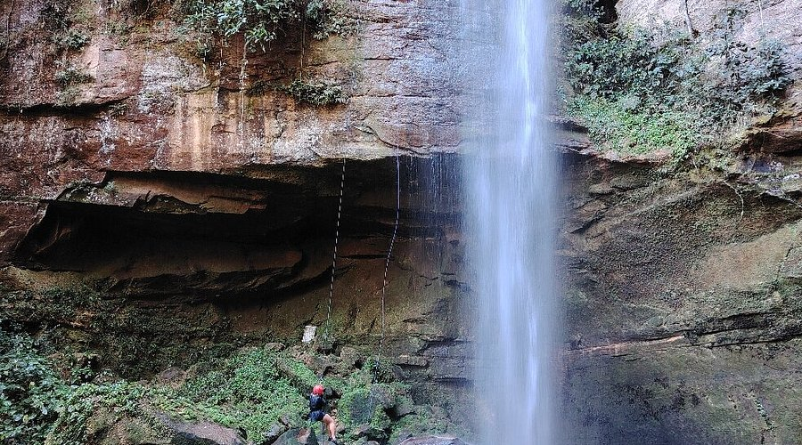
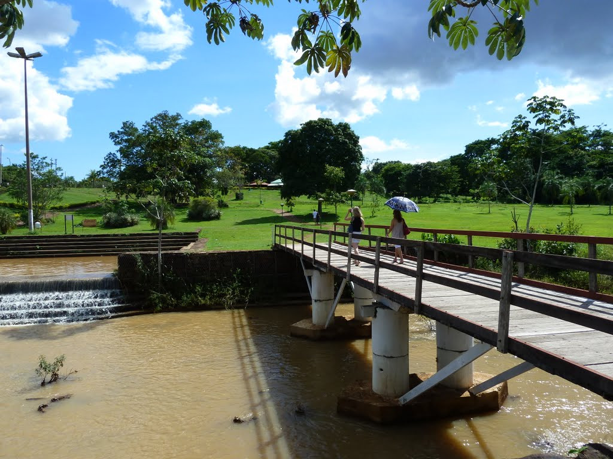

O que eu mais gosto em Palmas
Praia da Graciosa

A Praia da Graciosa, em Palmas, é o refúgio perfeito onde o sol beija o lago e presenteia a todos com um dos pores do sol mais inesquecíveis do Brasil!
Cachoeira de Taquaruçu

As cachoeiras de Taquaruçu, em Palmas, são um refúgio de águas cristalinas e natureza exuberante na serra, oferecendo um banho revigorante e paisagens deslumbrantes como a Roncadeira e o Escorrega Macaco, ideais para o ecoturismo.
Parque Cesamar

O Parque Cesamar é a principal área verde de lazer e convivência de Palmas, oferecendo trilhas, lago com pedalinhos e contato com a natureza no centro da cidade. Inaugurado em 1998, é o refúgio ideal para esportes, caminhadas e piqueniques com a família.